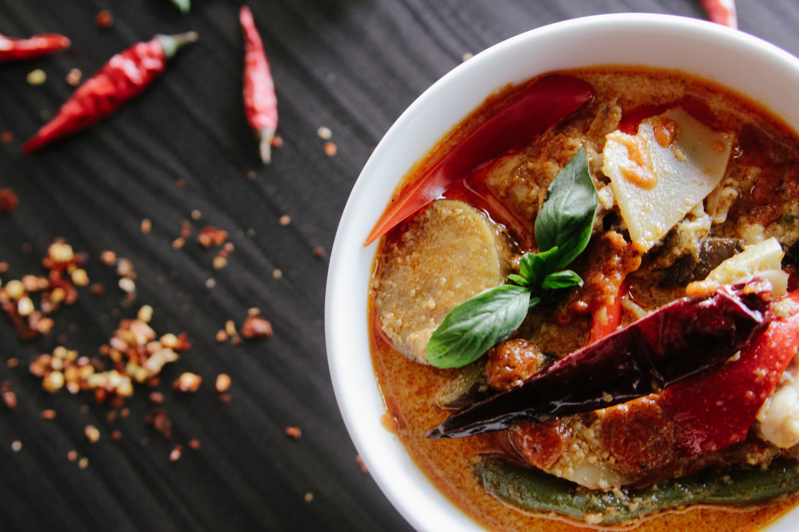
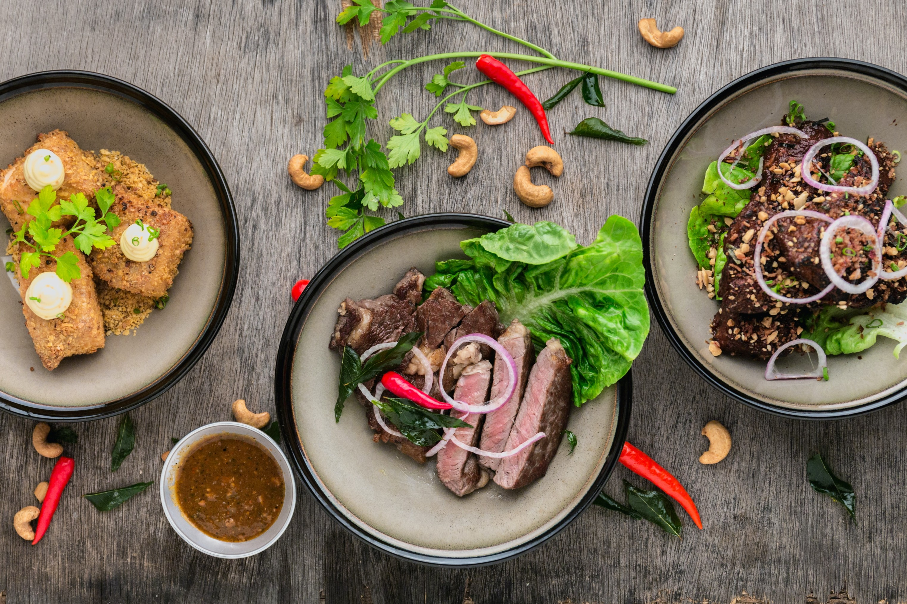

-

Hungry Birds - Delicious food
We serve the best food.The secret ingredient is always love.
-

The fondest memories are made when gathered around the table
-

We welcome your appetite.
Let our food satisfy your stomach.